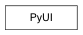

pymel.core.uitypes.PyUI¶

- class PyUI¶
- asQtObject(mayaName)¶
Given the name of a May UI control, return the corresponding QWidget. If the object does not exist, returns None
Note
Requires PySide
- delete(*args, **kwargs)¶
This command deletes UI objects such as windows and controls. Deleting a layout or window will also delete all of its children. If a flag is used then all objects being deleted must be of the specified type. This command may not be edited or queried. NOTE: it is recommended that the type flags be used to disambiguate different kinds of objects with the same name.
Flags:
Long Name / Short Name Argument Types Properties collection / cl bool 
- Object names for deletion are all radio or tool collections.
control / ctl bool
- Object names for deletion are all controls.
editor / ed bool
- Object names for deletion are all editors.
layout / lay bool
- Object names for deletion are all layouts.
menu / m bool
- Object names for deletion are all menus.
menuItem / mi bool
- Object names for deletion are all menu items.
panel / pnl bool
- Object names for deletion are all panels.
panelConfig / pc bool
- Object names for deletion are panel configurations. Flag can have multiple arguments, passed either as a tuple or a list.
radioMenuItemCollection / ric bool
- Object names for deletion are all radio menu item collections.
toolContext / tc bool
- Object names for deletion are all tool contexts.
uiTemplate / uit bool
- Object names for deletion are all UI templates.
window / wnd bool
- Object names for deletion are all windows.
Derived from mel command maya.cmds.deleteUI
Example:
import pymel.core as pm # Example 1. # # Create a simple window and then delete it and all of its children # with one 'deleteUI -window' command. # window = pm.window() pm.paneLayout() # Result: ui.PaneLayout('window1|paneLayout2') # pm.button() # Result: ui.Button('window1|paneLayout2|button15') # pm.showWindow( window ) pm.deleteUI( window, window=True ) # Result: u'' # # Example 2. # # Create a window with a number of buttons and delete a few of the # buttons with the 'deleteUI -control' command. # window = pm.window() pm.columnLayout() # Result: ui.ColumnLayout('window1|columnLayout25') # pm.button() # Result: ui.Button('window1|columnLayout25|button16') # pm.button() # Result: ui.Button('window1|columnLayout25|button17') # pm.button() # Result: ui.Button('window1|columnLayout25|button18') # b1 = pm.button() b2 = pm.button() b3 = pm.button() pm.showWindow( window ) pm.deleteUI( b1, b2, b3, control=True ) # Result: u'' #
- classmethod exists(name)¶
- getParent()¶
- name()¶
- parent()¶
- rename(*args, **kwargs)¶
This command renames the UI object passed as first arument to the new name specified as second argument. If the new name is a duplicate, or not valid, then re-naming fails and the old name is returned.
Derived from mel command maya.cmds.renameUI
Example:
import pymel.core as pm # Create a window with a single button. # window = pm.window() pm.columnLayout() # Result: ui.ColumnLayout('window1|columnLayout78') # pm.button( 'exampleButton', label='Example' ) # Result: ui.Button('window1|columnLayout78|exampleButton') # pm.showWindow( window ) # Edit the button label. # pm.button( 'exampleButton', edit=True, label='New Label' ) # Result: ui.Button('window1|columnLayout78|exampleButton') # # Rename the button. # pm.renameUI( 'exampleButton', 'newButton' ) # Result: u'newButton' # # Query the button label using the new object name. # pm.button( 'newButton', query=True, label=True ) # Result: u'New Label' #
- shortName()¶
- type(name, **kwargs)¶
This command returns the type of UI element such as button, sliders, etc.
Flags:
Long Name / Short Name Argument Types Properties isType / i unicode
- Returns true|false if the object is of the specified type.
listAll / la bool
Returns a list of all known UI commands and their respective types. Each entry contains three strings which are the command name, ui type and class name. Note that the class name is internal and is subject to change.
superClasses / sc bool
Returns a list of the names of all super classes for the given object. Note that all class names are internal and are subject to change. Flag can have multiple arguments, passed either as a tuple or a list.
Derived from mel command maya.cmds.objectTypeUI
Example:
import pymel.core as pm print(pm.objectTypeUI( 'viewPanes' )) # show all commands as their types import sys for c,e in enumerate(pm.objectTypeUI(listAll=True)): c += 1 sys.stdout.write(e + " ") if c % 3 == 0: sys.stdout.write('\n') # show Qt inheritence hierachy for buttons pm.window() pm.rowColumnLayout() b = pm.button() pm.showWindow() print(pm.objectTypeUI(b,sc=True))
- window()¶